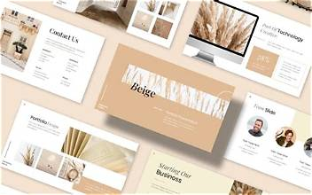
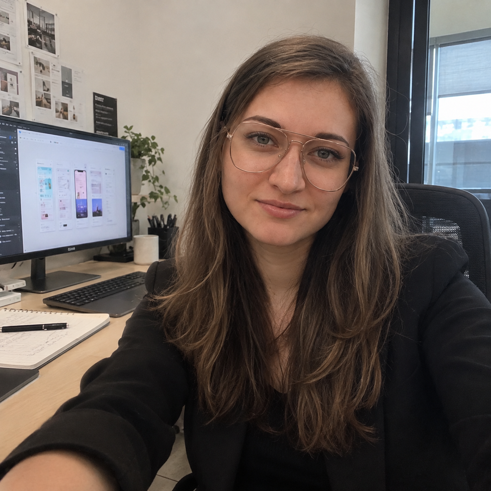
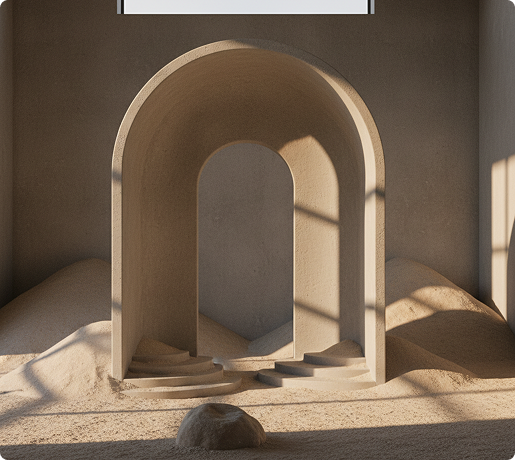

Исследование UX
Глубокие воркшопы по открытию потребностей пользователей, непрерывные интервью, карты юзабилити и комплексная проверка поведения.
Дизайнер интерфейсов
Я решаю сложные задачи продуктов с помощью тщательного исследования пользователей и минималистичных дизайнерских решений. Создание систем, которые соединяют людей и технологии.

Соединяя строгие стратегические бизнес-цели с гибким, органическим интерактивным поведением человека.

Создаю понятные и удобные цифровые интерфейсы, трансформируя сложные технические задачи в интуитивные UI/UX решения. Я считаю, что отличная система дизайна — это не только визуальная документация, а масштабируемая платформа, которая создает культурную динамику внутри команд.
Моя практика глубоко укоренена в строгом тестировании пользователей и чистой типографике. Убирая излишнюю структуру, мы делаем место для ясности и позволяем функциональной чистоте продукта проявиться.
Tetiana Zaichenko
Комплексные интерактивные возможности — от валидации стратегии до финальной документации архитектуры системы.
Глубокие воркшопы по открытию потребностей пользователей, непрерывные интервью, карты юзабилити и комплексная проверка поведения.
Интерфейсы с точностью до пикселя, высокого качества и адаптивные, основанные на строгих формулах компоновки и высоко отполированных графических стандартах.
Интерактивные поведенческие модели, идеально отражающие динамические потоки состояний, кастомные переходы и микроинтеракции с реальным ощущением.
Масштабируемая архитектура компонентов с токенизированными вариациями, тщательные протоколы передачи разработчикам и правила структурного управления.
Коллекция сложных цифровых решений, ориентированных на строгие цели продукта, интерактивную логику и масштабные фреймворки.
Интеграция передовых биотехнологических решений в системы цифрового мониторинга. Оптимизация сбора биометрических данных пациентов для превентивной диагностики и персонализированной терапии.
MamaJoy — это адаптивная Mobile-first экосистема и маркетплейс для беременных и молодых мам в Германии, созданная для снижения когнитивной нагрузки с помощью интуитивного UX, трекеров здоровья и быстрого заказа за 30 секунд. Проект опирается на детально проработанные сценарии пользователей.
Единая цифровая экосистема для жителей Кёльна, упрощающая поиск, подбор и запись детей и взрослых в локальные секции, школы и кружки. Решение проблемы языкового барьера и фрагментации информации за счет мультиязычности, сквозного поиска и централизованного бронирования.
Универсальный набор инструментов для реализации сложных мультиплатформенных продуктов — от качественного интервью до стандартного кода в производстве.
Как я двигаюсь от неясных первоначальных проблем к готовым дизайнерским фреймворкам в производстве с абсолютной прозрачностью.
Картирование проблем продукта через глубокие интервью с пользователями и встречи по согласованию бизнес-метрик.
Итерация поведенческих вайрфреймов для установления прочной механики навигации пользователя и правил системы.
Доставка отполированных визуальных дизайнов с микро-контентом, поддержанных масштабируемыми архитектурами токенов класса enterprise.
Сопоставление команд разработки с надежными спецификациями для разработчиков и непрерывными проверками поведенческого аудита.
Тесное сотрудничество со скалирующими компаниями и корпоративными операциями для достижения проверяемого прогресса продукта.
«Татьяна полностью трансформировала наш веб-интерфейс для сбора биометрических данных. Под ее руководством по UX/UI и front-end разработке стартап получил чистый, адаптивный код в VS Code и масштабируемую Figma-систему с ИИ-инструментами, что позволило нашей команде ускорить сдачу спринтов и безупречно внедрить Agile-процессы. Абсолютно системный мыслитель и проактивный специалист».
Давайте работать вместе
Сейчас я принимаю новые проекты по системам и визуальному дизайну. Если вы строите сложные инструменты для разработчиков, платформы здравоохранения или финтех-сети, давайте подготовим системный ответ.
